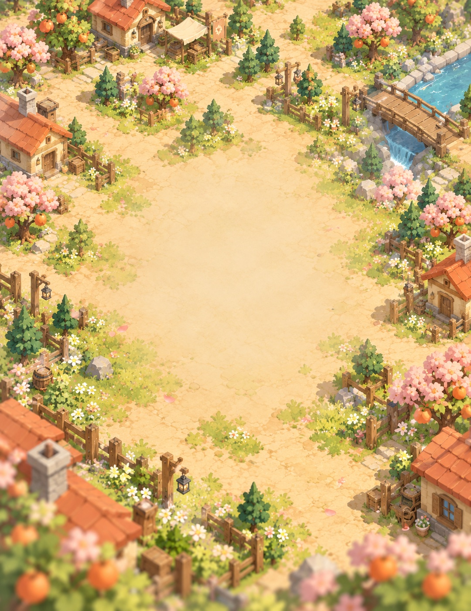

피하고, 파고들고, 베어라.
적의 움직임을 읽고 대시로 피하세요. 빈틈을 노리는 검격과 발도로 나만의 전투 리듬을 만듭니다.

한 자루의 검, 바람에 나부끼는 붉은 목도리.
돌아갈 곳을 되찾는 고양이 검객의 액션 RPG.
평온했던 일상이 무너진 뒤,
고양이는 검을 집어 듭니다.
한 걸음씩, 돌아올 곳을 만들기 위해.
적의 움직임을 읽고 대시로 피하세요. 빈틈을 노리는 검격과 발도로 나만의 전투 리듬을 만듭니다.
새로운 칼을 발견하고 장비를 강화하세요. 삿갓부터 목도리까지, 작은 검객의 다음 모험을 준비합니다.
마을의 위협을 물리치고 남은 온기를 모으세요. 사람들의 발길이 돌아올 때마다 모험의 의미도 깊어집니다.

WORLD CONCEPT ART · 개발 중인 이미지입니다햇살이 머물던 집. 익숙한 마을의 골목.
그리고 누군가를 기다리는 작은 모닥불.
캣블레이드는 잃어버린 집에서 출발해,
다시 돌아올 곳을 만들어 가는 이야기입니다.
캣블레이드는 지금 모험을 준비하고 있습니다.
출시 일정과 다운로드 링크는 이곳에서 안내합니다.